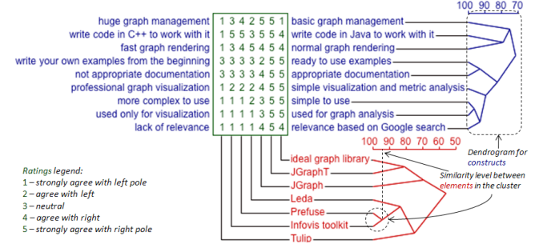

Software Engineering, cs510, Spring 2015
Department of Computer Science, College of Engineering
Project1: do something
Project2: reflect on what others did, observe "bad smells", suggest improvements.
- Empirical - Answer a research question using data.
- Do this one if your team like data mining
- Technical - Replicate, extend, or build a new technical research result.
- Do this one if your team is full of uber programming geeks
- Management - Apply new research results to practice.
- Do this one if your team likes the strategic view
- For all this work, work Develop a software engineering research prototype and conduct preliminary evaluation of the developed prototype in Github.
- Define a workflow, which is documented as GitHub labels.
- Communicate within the team via issue reports.
- Tag each issue with labels taken from the e interested in pursuing this option, please meet with the instructor on discussing the possible topics..
Note that Project2 will use these tracks to check for bad smells.
Develop two software engineering research prototype and conduct preliminary evaluation of the developed prototypes. In your report, describe and compare and contrast the two approaches.
This project: only recommended for those with a strong background both in software engineering and in system implementation. If you are interested in pursuing this option, please meet with the instructor on discussing the possible topics.
Report + short video (5mins) describing the tools (posted to YouTube) and a link to code in a github repository.
- Using a dataset from github, http://openscience.us/repo, Stack Overflow, or other approved dataset.
- Manually sample some data, form hypotheses and research questions.
- Process, clean, parse, filter, relate, and analyze data.
- Write report including figures, relevant statistics, etc.
- Link to data processing code in a github repository
Select 8 papers from ICSE'14, Technical Track, 2 max from NIER Track on a topic that interests you.
Write a survey paper that reviews the field around these papers: problems, approaches, contributions, related work; and connects all papers under some common themes. Write a management report that describes how a current practice can be improved, or should be avoided.
To find the context around the paper, cluster a structured review. In the following, step 4 is somewhat labor intensive but between 4 people can take less than a week.
- Pick some topic in SE (hint, the more focused, the better).
- Use domain knowledge to pick three high impact seed articles;
- Used Google to find 500+ relevant studies that cited any of those seed articles (see http://scholar.google.com/);
- Removed false positives by scanning titles and abstracts. This reduced the 500+ articles to less than one hundred;
- Applied relevancy rules to reduce the papers to two or three doze e.g.
- ``reject all papers that do not offer a univariate predictive analysis for the validation of the metric(s) under investigation''.
- Checked the literature reviews of important papers in this field for papers not in our sample.
For the remaining papers in the sample, perform a repertory grid analysis. In summary, from the two to three dozen papers:
- Pick 3 papers at random
- Ask which 2 are closest
- Ask what most distinguishes those two from the third
- Repeat until new trios of papers do not generate new constructs
- Score and group the papers
- Cluster the rows and columns using the techniques discussed in lectures

(These clustered heat maps can be generated in "R".)
Then :
- For each of the clusters found above, offer a strategic comment such as this is good, or here, bad things happens.
- Make recommendations on how to avoid the bad and get to the good.
- Comment on the road not taken; i.e. gaps between the clusters that no one is doing, but should.
For examples of this kind of analysis, see Tofan et al and Menzies et al (but note that these do not do the initial mass queries to find a large corpus).
Starts in April. Details TBD. But it studies the workflows seen in Project1.